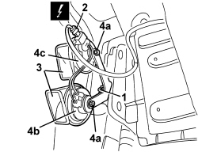

5550B30 L/H OR R/H HORN (ONE) - R+R
- Path
- Procedures > 55 ELECTRICAL EQUIPMENT > 5550 WARNING AND MANOEUVRING INDICATORS > 5550B HORNS > 5550B30 L/H OR R/H HORN (ONE) - R+R
- Kind
- repair procedure (removal / refitting; the operation number is the code)
- Applies to
- all engines; all production periods
- Interactive page
- https://sloeber94.github.io/elrnDB-aBrrSpdr/en/#/946002420
Applies to: all engines; all production periods
 Removing
Removing
 Refitting
RefittingOp. 7055B54 UNDER ENGINE PROTECTION/GUARD - R.R.
1. Undo the nut.
2. Disconnect the electrical connection.
Description | Component |
|---|---|
SINGLE-TONE HORN |
3. Remove the horns with the bracket.
4. If necessary, undo nuts (4a) and remove horns (4b) and (4c) from the bracket.

Applies to: all engines; all production periods
Refitting
Removing- Check that the horns are not damaged and, if necessary, conduct an electrical test.
- If the horns are removed, position them on the bracket and tighten the nuts.
- Position the horns with the bracket.
- Connect the electrical connection.
- Tighten the nut.